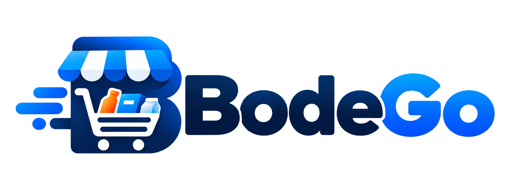
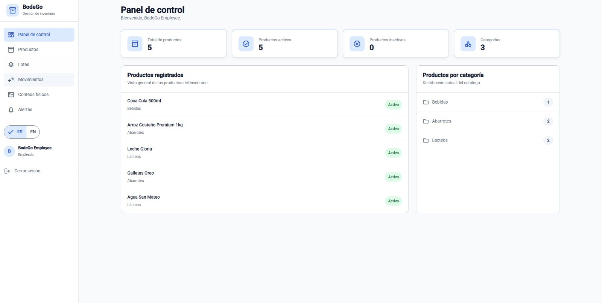
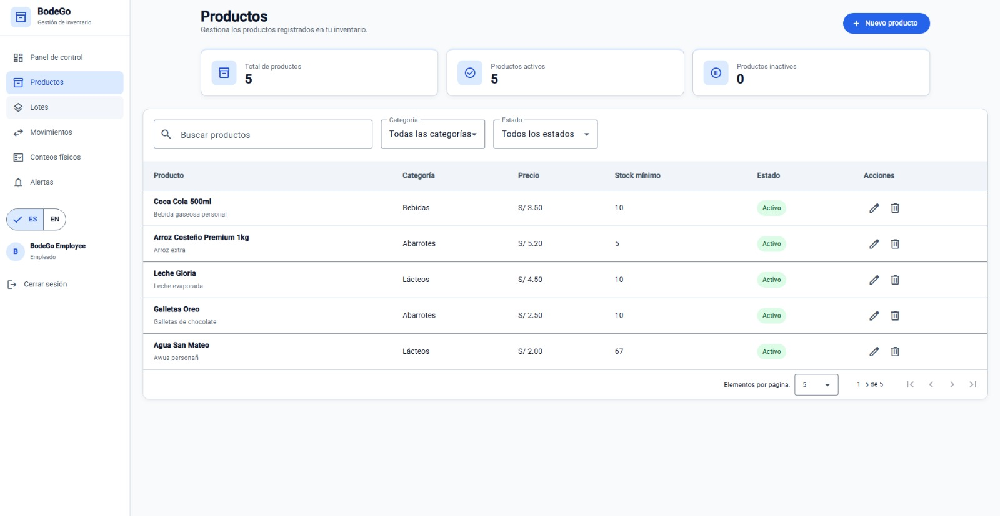
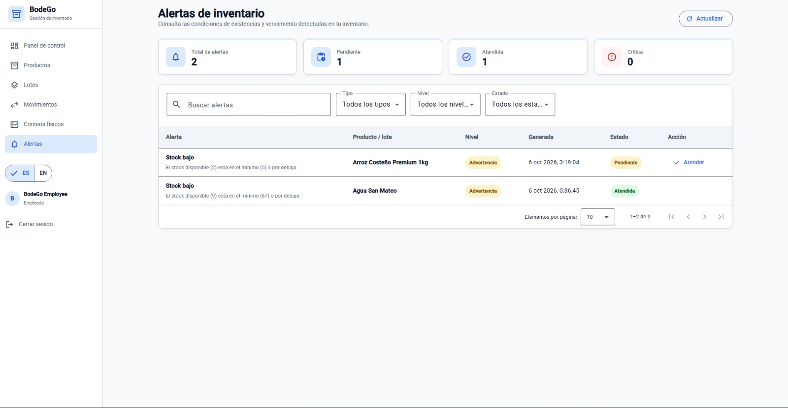

Registra tus productos
Agrega productos con información como nombre, categoría, stock, precio y fecha de vencimiento.

BodeGo te ayuda a controlar tu inventario, gestionar productos, supervisar fechas de vencimiento y organizar las operaciones de tu negocio desde una sola plataforma web.
BodeGo está diseñado para facilitar las tareas diarias de tu negocio y mantener toda la información organizada desde una sola plataforma.
Agrega productos con información como nombre, categoría, stock, precio y fecha de vencimiento.
Visualiza las existencias disponibles y mantén un mejor control de las entradas y salidas.
Detecta productos próximos a vencer y toma decisiones antes de que se conviertan en pérdidas.
Consulta información importante desde el panel principal y conoce mejor el estado de tu minimarket.
Herramientas pensadas para mejorar el control, organización y eficiencia de tu minimarket.
Centraliza tus productos y consulta rápidamente las cantidades disponibles.
Organiza productos por lote y controla fechas de ingreso y vencimiento.
Identifica productos próximos a caducar y reduce las pérdidas por mercadería vencida.
Consulta información sobre stock, movimientos e indicadores importantes para el negocio.
Crea promociones para impulsar la salida de productos con baja rotación o próximos a vencer.
Gestiona accesos diferentes para administradores y empleados según sus responsabilidades.
BodeGo busca ofrecer una experiencia clara e intuitiva, permitiendo encontrar rápidamente la información más importante de tu negocio.
El administrador podrá visualizar información importante del negocio desde un panel central: inventario, productos críticos, alertas y otros indicadores relevantes.

Registra nuevos productos, consulta existencias y administra información relevante desde una interfaz organizada.

Detecta productos próximos a vencer y crea promociones que permitan reducir pérdidas y aprovechar mejor tu inventario.

BodeGo diferencia las responsabilidades dentro del minimarket para mantener una gestión más organizada.
Centralizar la información permite tomar mejores decisiones y reducir tareas manuales.
Obtén mayor visibilidad sobre productos perecibles y sus fechas de vencimiento.
Mantén la información de tu negocio organizada y disponible desde una sola plataforma.
Simplifica tareas que normalmente requieren controles manuales y hojas de cálculo.
Accede a las principales herramientas de BodeGo desde una sola plataforma.
Cuéntanos sobre tu negocio y descubre cómo BodeGo puede ayudarte a mejorar la gestión de tu inventario.